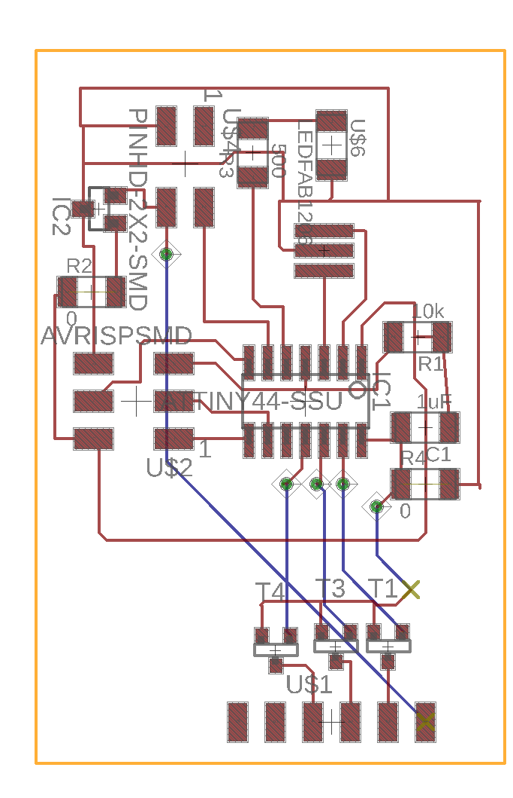
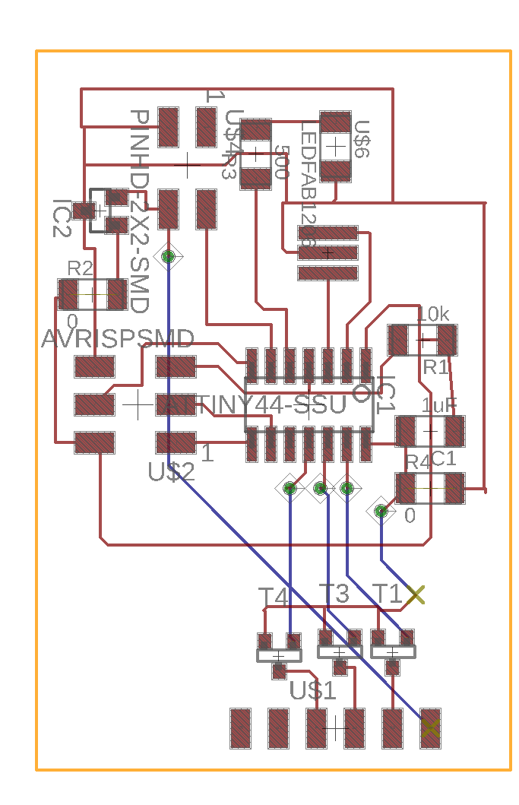

Final Project: Soundlight
My final project is a speaker that interacts with the music that it plays in realtime through light and color.
It takes input through a standard 3.5mm audio jack - I connect it to my iPhone and my MacBook Pro, though of course any other audio source would work just as well. It runs on 9V DC. The intended aesthetic is "futuristic phonograph". The base is a press-fit box, laser-cut from a sheet of black acrylic; the cone is 3d printed. The lights are a specially-ordered string of RGB LEDs, glued to a ring of clear acrylic which is in turn attached to the inside of the front plane of the speaker, and a second string of RGB LEDs glued to a thin stick of acrylic which is suspended through the center of the cone. This is so both the body of the cone and the front of the speaker will light up in synchrony. The signal processing that enables the sound-light interaction takes place on a printed circuit board containing Atmel ATtiny44 microcontroller which is hidden away in the base; there is also an amplifier board in the base that drives the speaker, since the voltage output by most devices through a 3.5mm jack is quite small.
The cone
The very first thing I decided about the speaker, before I'd decided on the music-light interaction, was that the speaker should be translucent and internally lit with LEDs, for a soft-glow effect. I was originally interested in very organic shapes, including a nautilus shell. Unfortunately, it turns out that it is incredibly difficult to build a nautilus shell in a CAD program. (Also, the mixing of visual metaphors seemed quite unnecessary. Nautiluses don't typically glow in nature, and they have little-to-nothing to do with sound.)
Instead, I started looking at the shapes of speakers other people had designed, for inspiration, and that was how I settled on the look of a phonograph bell. The nice thing about phonograph bells, comparatively, is that they're regular objects. Most vintage phonographs have regularly spaced creases, but I didn't like how that looked as much. The creases were also suboptimal for my project specifically, since I wanted to project light through the bell of the speaker - the creases would be thicker and wouldn't let through the light. My final speaker bell ended up being both simpler and even more organic in form than the standard vintage phonographs. It's actually fairly simple to create curved, soft forms in Fusion360 as long as said forms are radially symmetric: just create a sketch of the silhouette of your shape, and rotate that around a central axis.
I fabricated the speaker bell with 3d printing, using the OnePrint in the EECS lab with an off-white material that becomes translucent when it's spread out thin. I wasn't pleased with how yellow it turned out, actually, but I figured the effect would be somewhat softened by the glow of the LEDs inside.
When I fabricated the cone, I initially imagined that the cone would contain a large board with both microcontroller and lights, and that the power jack and the auxiliary sound jack would just trail out the back. So I fabricated the cone to be open - i.e. with no front - because I needed to be able to take the board out, reprogram it, and put it back in for the forseeable future. I also didn't know what the front would even look like, because I didn't know what my speaker would look like yet.
The speaker
In weeks eleven and thirteen, I had already been working on the problem of having a speaker produce sound from aux input. The main problem was volume: even after extensive troubleshooting, the sound, while of serviceable quality, was really, really quiet.
Part of the problem was that the lab-provided speakers just weren't good enough quality. They're fine for our purposes, but they don't really project enough. But even with a better quality one, the situation did not improve. Why? Because the iPhone produces a signal appropriate for transduction by headphone speakers, which are very small and don't need to produce a lot of volume because they're located directly in your ears. What I needed, and what I had totally failed to consider in the planning phase, was an amplifier.
This completely predictable failure has been brought to you by the fact that I have never done any kind of power electronics before. I had just assumed that as long as the signal was intact, the speaker would be able to transduce it at a high enough volume as long as the speaker was good enough quality. Which is a very computer-science-y mistake to make, really: only paying attention to the information being transmitted, and assuming the physical medium could just do whatever you needed it to do. In any case, with the final presentation only a week away, I despaired of having the right parts to make an amplifier board: all the designs I'd seen included a specialized chip for the amplification proper, which we did not have in the lab. So: I cannibalized an existing speaker.
Once I removed the board and hooked it up to the speaker and the speaker up to my iPhone, the situation improved immensely.
However, the amplifier board was rather large - about six inches long and up to an inch thick, due to protruding potentiometers. I had previously intended my cone to rest on a purely ornamental base that would be about 3 inches square. However, now that I had a large amplifier board to hide, I needed a more substantial base.
The base
It was at this point that I realized that actually, having a large base would not disrupt the aesthetic of the speaker: all the old phonographs have quite large, lacquered wood bases, and having the bell of the speaker protrude at an angle from the base would make it resemble an old phonograph quite readily. So I needed a box, with a brace extending out of it to hold the speaker bell up at the right sort of angle. I considered 3d printing the box, just so everything would match, but that would take a very long time. Instead, I laser cut a press-fit box from black acrylics, adding a brace out of the same material. This has the additional advantage of making the printed speaker look less yellowy by contrast.
The lights
I originally intended that the speaker would be lit by a board full of LEDs placed on the inside of the speaker - that the light would diffuse out pretty evenly across the inner walls of the speaker. However, the speaker wasn't quite as translucent as I'd hoped, and so something more drastic was needed.
Instead of adding more LEDs, I went online and purchased two strings of RGB LEDs, preconnected with copper traces on a flexible plastic base, and with resistors already placed. This would allow me to have a large number of lights without having to fabricate a large board and solder the parts on. The strings of RGB LEDs take four inputs: three for the red, green, and blue LEDs, and one power line.
The board
The microprocessor board is fairly simple. It contains one Atmel ATtiny44 8-bit microprocessor, two four-pin headers - one that takes input from the aux and power jacks, and one that sends out power and signal (inverted, since this is an RGB LED) to the three LED lines terminating inside the speaker cone. The microprocessor takes in auditory input, runs it through an analog-to-digital converter, and does some signal processing to extract the salient features of the music and decides which colors should be lit up on that basis. Here's an Eagle board file, and here's a schematic.
 
 The signal processing
Here is my code and my makefile. I wish I could say that I used sophisticated algorithms to retrieve the most relevant important characteristics of the audio signal, but it turns out that that is totally unnecessary. The analog-digital converter outputs values in the range 0 to 1023, but in practice, even the quietest signals only use the range 750 - 1023. I split up the range into intervals of 50, and then assigned a section of the ROYGBIV spectrum to each: for example, values below 750 cause the speaker to produce no light, values from 750 to 800 produce red light, values from 800 to 850 produce yellow light, values from 850 to 900 produce green light, and values from 900 to 950 produce cyan light. In order to smooth out the color transitions and protect against the small amount of electrical noise that is added to the audio signal once it enters the board, the value that we're testing is actually not the value that comes out of the digital-analog conversion, but a time-decayed average of all the values that have ever come out of the digital-analog conversion. The algorithm discounts old values heavily, but the small amount of smoothing it adds is enough to make the lights less "jittery".